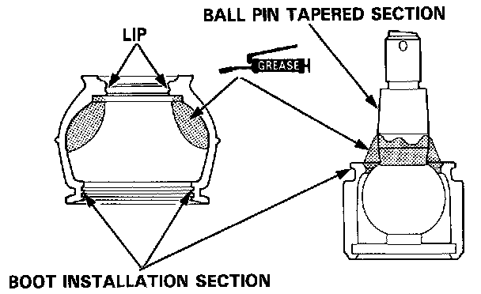
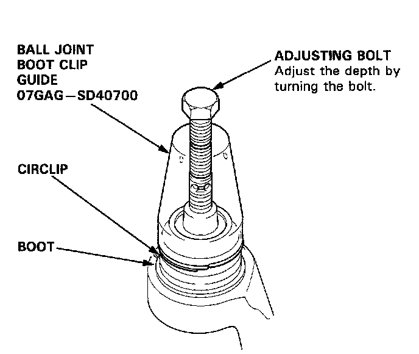

Ball Joint: Service and Repair
Ball Joint Replacement1. Remove steering knuckle as described under Steering and Suspension / Steering / Steering Knuckle / Service and Repair. Service and Repair
2. Remove ball joint boot circlip and the boot.
3. Remove circlip, then press ball joint out of steering knuckle using a suitable tool.
CAUTION: Do not contaminate the boot installation section with grease.
4. Reverse procedure to install.
INSTALLATION
1. Pack the interior of the boot and lip with grease.

2. Wipe the grease off the sliding surface of the ball pin and pack with fresh grease.
CAUTION:
^ Keep grease off the boot installation section and the tapered section of the ball pin.
^ Do not allow dust, dirt, or other foreign materials to enter the boot.
3. Install the boot in the groove of the boot installation section securely, then bleed air.
4. Adjust the special tool with the adjusting bolt until the end of the tool aligns with the groove on the boot. Slide the circlip over the tool and into position.

CAUTION: After installing the boot, check the ball pin tapered section for grease contamination and wipe it if necessary.